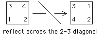
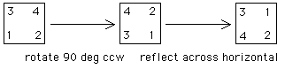

| 2. First, here is a reflection of the square across a diagonal. |
|  |
| Next, here is a 90 deg ccw rotation followed by reflection across the horizontal bisector of the square. |
|  |
| So reflection across this diagonal is equivalent to rotating |
| The symmetries of a regular polygon are reflections or rotations, because symmetries must take consecutive vertices to consecutive vertices. |
|
|
| Pick a reflection c and suppose d is any other reflection. |
| Then cd is orientation-preserving, so cd = r, a rotation, and |
| d = c2d = c(cd) = cr |
| because c2 = identity, for any reflection c. |
Return to Symmetries of Regular Polygons Exercises.